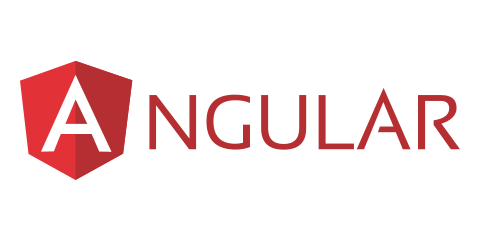
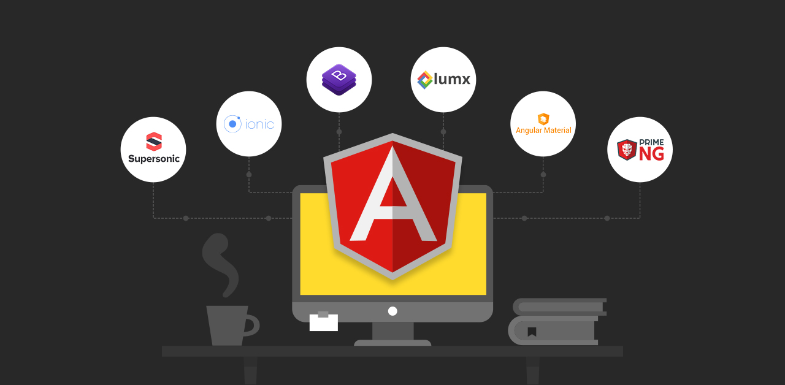
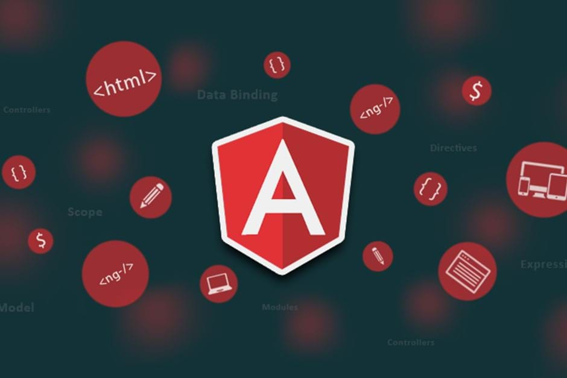
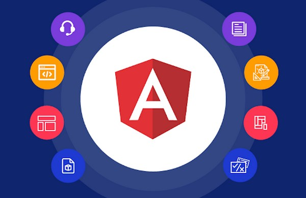

Bem-Vindo ao Manual sobre Angular
Neste guia, você terá a oportunidade de explorar e mergulhar no mundo do desenvolvimento de aplicações web
modernas utilizando o poderoso framework Angular. Aqui, você encontrará informações abrangentes e passo a passo
para começar a construir interfaces de usuário interativas e dinâmicas, desde os conceitos fundamentais até
tópicos mais avançados.
Introdução sobre Angular
Versões
Instalação do Angular Cli
Verificação da Instalação do Angular Cli
Criando um projeto em Angular
Executando Aplicações Angular
Introdução sobre Angular
Angular é um framework de desenvolvimento de aplicações web de código aberto, mantido pela equipe do Google e
uma comunidade ativa de desenvolvedores. Ele é amplamente utilizado para criar interfaces de usuário dinâmicas e
interativas, fornecendo ferramentas poderosas para a construção de aplicativos web modernos e escaláveis.
Lançado pela primeira vez em 2010 como "AngularJS" e depois reescrito como "Angular" a partir da versão 2, o
framework evoluiu para se tornar uma opção popular no desenvolvimento front-end.
Uma das principais características do Angular é a abordagem baseada em componentes. Os aplicativos Angular são
construídos a partir de pequenas peças reutilizáveis chamadas de componentes, que encapsulam a lógica e a
apresentação de partes específicas da interface do usuário. Esses componentes podem ser combinados para formar
interfaces complexas e podem interagir uns com os outros de maneira bem definida.
Outra característica fundamental do Angular é a vinculação de dados bidirecional. Isso significa que as mudanças
feitas nos dados do aplicativo são automaticamente refletidas na interface do usuário e vice-versa, tornando a
manipulação do estado do aplicativo mais simples e consistente.
O Angular também possui um sistema robusto de injeção de dependências, o que facilita a organização e a
reutilização do código. Além disso, ele oferece suporte a roteamento, permitindo a criação de aplicativos de
página única (SPA) com transições suaves entre diferentes seções do aplicativo sem recarregar a página.
O uso de TypeScript, uma linguagem superset do JavaScript, é uma característica integral do Angular. O
TypeScript traz recursos de tipagem estática e outras melhorias à linguagem JavaScript, ajudando os
desenvolvedores a detectar erros mais cedo e a escrever código mais seguro e legível.
Em resumo, o Angular é um framework poderoso e abrangente para o desenvolvimento de aplicações web modernas. Com
sua arquitetura baseada em componentes, vinculação de dados bidirecional, injeção de dependências e outras
características avançadas, ele se tornou uma escolha popular entre os desenvolvedores que buscam criar
interfaces de usuário dinâmicas e eficientes.
 Voltar
Voltar
Versões
➀ AngularJS (1.x): A versão original do Angular, lançada em 2010. Foi um dos primeiros frameworks a
introduzir a ideia de vinculação de dados bidirecional e componentes reutilizáveis. O AngularJS usava JavaScript
puro e HTML.
➁ Angular 2: Lançado em setembro de 2016, o Angular 2 foi uma reescrita completa do AngularJS, adotando
TypeScript como linguagem principal. Ele introduziu uma arquitetura baseada em componentes, vinculação de dados
bidirecional refinada e melhor desempenho geral.
➂ Angular 4, 5, 6, 7, 8, 9 e 10: Essas versões subsequentes trouxeram melhorias contínuas, otimizações de
desempenho e novos recursos ao framework, incluindo melhorias no sistema de compilação, recursos aprimorados de
CLI (Interface de Linha de Comando) e suporte a Progressive Web Apps (PWAs).
➃ Angular 11 e 12: Essas versões continuaram aprimorando a experiência do desenvolvedor, introduzindo
recursos como atualizações incrementais mais rápidas, melhorias na compilação e ajustes de desempenho.
➄ Angular 13 (previsão): é provável que esta versão tenha introduzido mais aprimoramentos e recursos para
aprimorar ainda mais a experiência de desenvolvimento.

Voltar
Instalação do Angular Cli
Para instalar o Angular CLI (Command Line Interface), você precisa ter o Node.js e o npm (Node Package Manager)
instalados em seu sistema. O npm é um gerenciador de pacotes que permite instalar e gerenciar bibliotecas e
ferramentas, incluindo o Angular CLI.
Passo 1: Instale o Node.js e o npm:
Se você ainda não tem o Node.js instalado, você pode fazer o download e instalá-lo a partir do site oficial:
https://nodejs.org/
Passo 2: Instale o Angular CLI:
Abra o seu terminal ou prompt de comando e execute o seguinte comando para instalar o Angular CLI globalmente em
seu sistema:
npm install -g @angular/cli
Passo 3: Verifique a instalação:
Após a instalação, você pode verificar se o Angular CLI foi instalado corretamente executando o seguinte
comando:
ng --version
Com o Angular CLI instalado, você estará pronto para criar e gerenciar projetos Angular, bem como usar várias
ferramentas e comandos para desenvolvimento e compilação de aplicações Angular. Certifique-se de consultar a
documentação oficial do Angular CLI para aprender mais sobre seus recursos e como usá-los:
https://angular.io/cli
 Voltar
Voltar
Verificação da Instalação do Angular Cli
11 Abra o terminal ou prompt de comando no seu sistema operacional.
12 Digite o seguinte comando e pressione Enter:
ng --version
22 Aguarde alguns segundos. O Angular CLI exibirá informações sobre a versão instalada, bem como
informações relacionadas ao Node.js e ao ambiente.
Se a instalação estiver correta, você verá uma saída que se parece com isso:
Angular CLI: x.x.x
Node: x.x.x
...
Onde "x.x.x" representa a versão atual do Angular CLI e do Node.js instalados no seu sistema.
Se você não vir nenhuma mensagem de erro e receber uma saída similar à mencionada acima, isso indica que a
instalação do Angular CLI foi feita corretamente e você está pronto para começar a usar o Angular CLI para criar
e gerenciar projetos Angular. Caso contrário, verifique se você seguiu corretamente os passos de instalação e
certifique-se de ter o Node.js e o npm instalados na versão correta.

Voltar
Criando um projeto em Angular
Passo 1: Abra o Terminal ou Prompt de Comando:
Abra o terminal ou prompt de comando no seu sistema operacional. Certifique-se de que o Angular CLI foi
instalado corretamente, como mencionado anteriormente.
Passo 2: Crie um Novo Projeto:
Execute o seguinte comando para criar um novo projeto em Angular. Substitua "nome-do-projeto" pelo nome que você
deseja dar ao seu projeto:
ng new nome-do-projeto
Passo 3: Configurar Opções do Projeto (Opcional):
O Angular CLI irá perguntar se você deseja adicionar algumas opções ao projeto, como roteamento, estilo CSS (ou
outras opções) e quais módulos de teste usar. Você pode selecionar as opções desejadas usando as teclas de seta
e a tecla Enter. Se você não tiver certeza, as opções padrão geralmente são boas para começar.
Passo 4: Navegar para o Diretório do Projeto:
Depois que o projeto for criado, navegue para o diretório recém-criado usando o comando "cd":
cd nome-do-projeto
Passo 5: Iniciar o Servidor de Desenvolvimento:
Para iniciar o servidor de desenvolvimento e visualizar seu projeto, execute o seguinte comando:
ng serve
Isso irá compilar o projeto e iniciar um servidor de desenvolvimento. Você verá informações sobre a compilação
e, quando estiver pronto, poderá acessar o projeto em seu navegador usando o endereço http://localhost:4200/.
A partir desse ponto, você pode começar a editar os arquivos do seu projeto e ver as alterações refletidas
automaticamente no navegador enquanto o servidor de desenvolvimento estiver em execução.

Voltar
Executando Aplicações Angular
Usando o Angular CLI
Passo 1: Navegue para o diretório do seu projeto Angular no terminal:
cd nome-do-projeto
Passo 2: Inicie o servidor de desenvolvimento com o seguinte comando:
ng serve
Isso irá compilar o projeto e iniciar um servidor de desenvolvimento. Por padrão, ele será executado em
http://localhost:4200/. Abra um navegador e acesse essa URL para ver a sua aplicação em execução.
Configurando um servidor HTTP manualmente
Passo 1: Navegue para o diretório do seu projeto Angular no terminal:
cd nome-do-projeto
Passo 2: Use o pacote http-server (ou outro pacote semelhante) para iniciar um servidor HTTP. Você pode
instalá-lo globalmente usando o npm:
npm install -g http-server
Passo 3: Após a instalação, inicie o servidor no diretório dist (onde o Angular compila o código):
http-server dist
Isso iniciará um servidor HTTP e você verá a saída no terminal com o endereço onde a aplicação está sendo
executada (por exemplo, http://localhost:8080). Abra um navegador e acesse esse endereço para ver a sua
aplicação.
 Voltar
Voltar